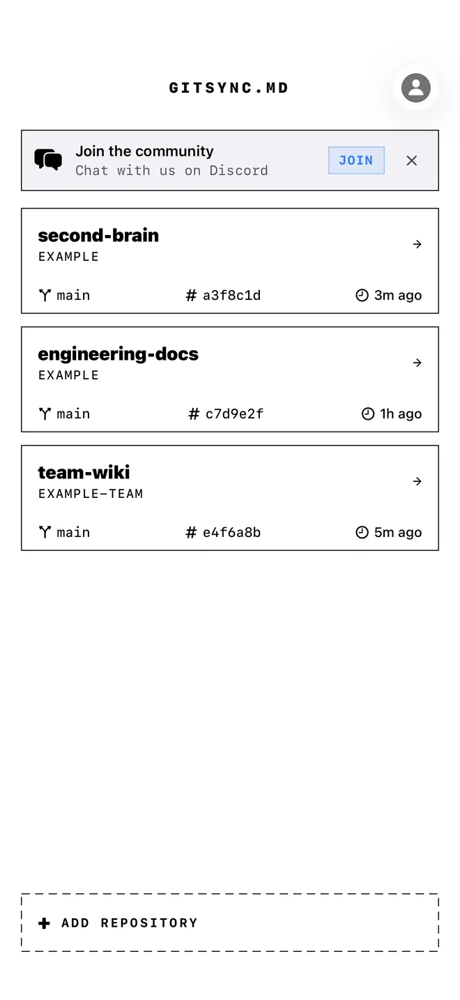

01
Create or clone.
Turn a local folder into a repo and publish to GitHub, or clone an existing repository from your Git server.
git init / git cloneIndependent files. Anywhere.
A real Git client for iPhone and iPad.
Sync your Obsidian vault, create a repo from local files, or edit, commit, and push code wherever you are.
iPhone + iPad: $19.99 once. Unlimited repositories.Android: $9.99 once. All features included.No subscriptions.

Your vaults and codebases. One place. Real Git.
01 / The workflow
Keep the workflow you know.
Leave the laptop behind.
Turn a local folder into a repo and publish to GitHub, or clone an existing repository from your Git server.
git init / git cloneWrite in Obsidian, your favorite Files-compatible editor, or GitSync.md. Your files stay ordinary files.
notes / code / whateverReview the diff, stage your changes, and make a commit. Send your work straight to your remote.
git commit → git pushCreate on device
A folder of notes, a small project, your next idea. Turn it into a real Git repository on your iPhone or iPad, then publish it to a new GitHub repo. Visibility starts private. Your files stay in their original folder.
Start with your filesChoose Add Repository → Publish a Folder, select a supported local folder in Files, and sign in with GitHub.
Review and select your files, set your author details, and save the first commit on-device. Nothing is uploaded in this step.
A separate publish action creates a private repository in your personal GitHub account and pushes your saved commit. Keep the app open for the first upload.
First publication supports local app folders under On My iPhone or On My iPad and regular files up to 10 MiB each. Cloud-provider folders and Git LFS publication are outside this flow.
02 / Full control
Actual Git, powered by libgit2. See what changed, choose what to stage, and keep your history in your hands.
See the sourceBranches, commit history, diffs, stash, tags, merge, and rebase. Resolve conflicts with a three-way view.
GitHub, GitLab, Bitbucket, Gitea, Forgejo, or a self-hosted remote. Connect over HTTPS or SSH. Git LFS included.
Files live in iOS Files. Work in Obsidian, iA Writer, or the built-in syntax-highlighted editor. GitSync.md handles the Git.
Run Pull, Push, or Sync from Apple Shortcuts. Pull from your Home Screen or Control Center. Enable Background Sync when it suits your workflow.
Background work is best effort and scheduled by iOS. Automatic publishing is off by default.
03 / Built for your files
If it belongs in a Git repository,
it belongs in your pocket.
Keep your Obsidian vault versioned and ready wherever an idea finds you.
Set up your vaultEdit a config, update your docs, or commit a change to your own Git server.
Connect your remoteStandard Git. Ordinary files. Always yours. Git traffic goes directly from your device to your remote. Git credentials are stored in the iOS Keychain.
PrivacyOn iPhone and iPad, GitSync.md is $19.99 on the US App Store, paid once. Unlimited repositories, the editor, all manual Git tools, and optional Background Sync are included. On Android, GitSync.md is $9.99 on Google Play, paid once, with all features included. Neither version has a subscription. Local store prices may vary.
Yes. On iPhone and iPad, choose Add Repository → Publish a Folder and sign in with GitHub. Select an existing local folder, review the files, and prepare the initial commit in place. Uploading is a separate action that creates a new private repository in your personal GitHub account. This flow supports local app folders under On My iPhone or On My iPad, with regular files up to 10 MiB each; cloud-provider folders, empty repositories, and Git LFS publication are outside this flow. See how it works →
Yes. Clone your vault into a Files location Obsidian can access, then use GitSync.md to pull and push. Shortcuts and syncmd:// links can trigger repository actions. Follow the setup guide →
Yes. Use GitHub OAuth or a Personal Access Token for GitHub, or connect another Git remote over HTTPS or SSH with its own credentials. GitLab, Bitbucket, Gitea, and Forgejo are supported.
Review conflicts in the Conflict Center. Choose ours or theirs, or edit a merged result in the three-way view. Continue or abort a merge or rebase explicitly. It's a real Git working copy, so you can also finish on desktop.
You choose automatic pulls, automatic commit and push, or both. Publishing starts off. Sync attempts happen when the app opens and when iOS allows background processing; they aren't guaranteed or real time. Concurrent edits and unsafe Git states stop for your attention.
Files live on your device, and Git operations talk directly to your remote. Credentials stay in Keychain. Separately opted-in Push Sync uses a relay for repository names, GitHub installation/account identifiers, and APNs registration data, but never file contents, local paths, or Git credentials. The app also collects coarse onboarding analytics. Read the privacy policy →
GitSync.md is available for iPhone and iPad on the App Store, and for Android on Google Play. The iPhone and iPad app requires iOS 17 or iPadOS 17 or later; its Control Center pull button requires iOS 18 or later. The Files, Apple Shortcuts, and on-device folder publication workflows shown here describe the iPhone and iPad app.
Read the field notes
Obsidian + Git on iPhone & iPad Fix Obsidian Git on iPhone All guides →From the App Store
For the vaults, repos, and ideas you take everywhere.
“This is a great app and exactly what I was looking for to sync my git repos from my phone. Works perfectly!”
“For a simple minded diy vibe coder this worked amazingly well. All vaults syncing with this platform 10/10”
“This was so simple a caveman could do it.”
“Five stars! This app just simply works. Amazing job, thanks!”
“I really love it, it’s easy to use.”
“It’s sample and effective, follow the YouTube instruction video, and get it work perfectly!”
GitSync.md / iOS + Android
Take your repositories with you.

iPhone + iPad: $19.99 once.Android: $9.99 once. All features included.No subscriptions.